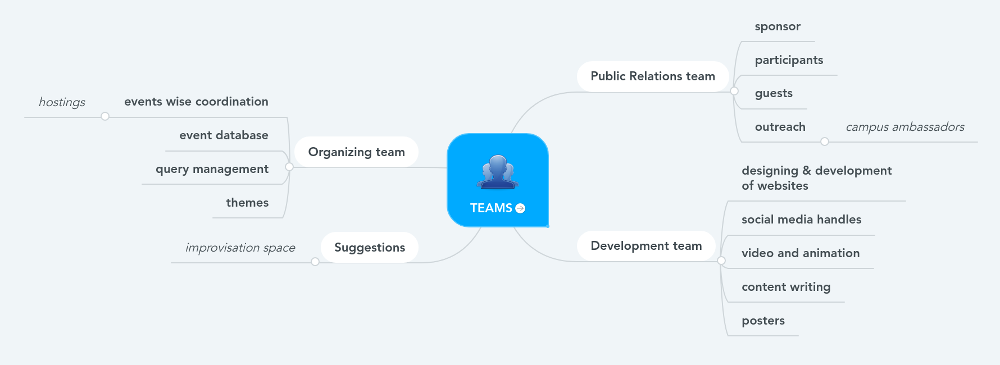
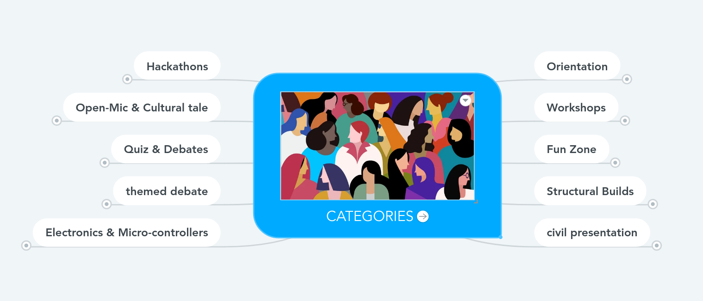
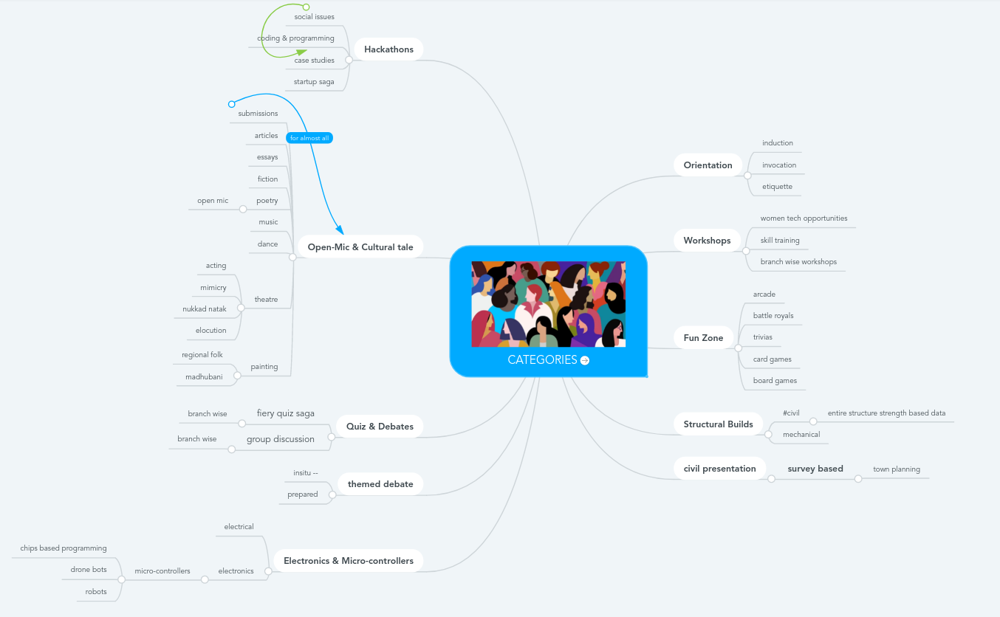

BCE, Bakhtiyarpur - 2021
In terms of our previous interactions with participants across multiple colleges in the locality and around, this Environment Day
5th June 2021, We sparked upon an idea to utilize this influx of participants and the lock-down to our advantage to generate a college hostedTechno-Cultural-Festa general kick-start base of which are discussed below.Timing
Mid September 2021
| Hostings | description |
|---|---|
| orientation | welcoming freshers, interaction of junior, senior, alumni under one hood |
| basic etiquette | Discussing the general etiquette, respecting your fellow-mates, seniors, juniors, everyone. Approaching, seeking help the right way, personality development, communication skills, professionalism and more can be added |
| workshop | specific skill-based interactive sessions empowered by microsoft and github that is already present in our campus — career en devours and opportunity in Branched engineering perspectives(soft and hard skills) |
| induction | opportunities especially for 1st year to understand scopes and gateways to possibilities ahead from those already on the path |
| invocation | success and struggle stories to better understand tactics to handle generic issues yet to come |
| hackathon-Case Studies | as the name says |
| StartUp Saga | discussing budding frameworks in pearly minds (basically a hackathon but where ideas would be valued more than the end product itself as in direction of removing the fear of coding skills required for hackathons) |
| Cultural Tale | as the name says(includes essays,fiction,fantasies,poetries, music) + open mic platforms |
| Thug Meme battles | ;) |
| Digital art and Animation | as the name says |
| Women’s Tech Road-maps | as the name says |
Hackathon (Social problems) advanced |
recognizing the problems around us that could be addressed and resolved utilizing hardware, software,algorithms, idea sparks, diplomacy,revolutionary movements |
| Fiery Quiz Sagas | branched engineering multiple layered battle rounds |
| United Debate Opportunities | a well devised way to discuss and come up with information and solutions related to various technical and non technical branched engineering schematics and topics |
| Gaming Events | Having some online multiplayer games to play like battle royales mystery voids board games Strategic games Card games Trivias arcade-adventuresand many more… |
| Structural Builds | Being an engineer automatically rhymes with expectations of pre-knowing the basic structural and material strengths — so here we are to battle among those who can build stable designs as per supplied constrains and themes(obviously on simulations) |
| Crazy HARDWARE, ELECTRONICS, IOT and MICRO_CONTROLLER STUFFS | Workshop and basic simulator projects to get people started in field of understanding how those jiggly lil electrons behave to form the 21st century as we know [Hardware buzz and circuit mania rapid fires and competetive rounds] |
| Avyukt Leaderboards | the ultimate countdown rush to the final force fields of maximum participation… cuz holding multiple zone is a zone itself — chances to win exciting goodies apart from event participation!! |
| yet to add parts | suggestions, please! |
1.Teams [hosting]

2.Categories [coordination]

3.Events [presentation]

integrate suggestions )Well, with some of my EEE colleagues we are working on these events.
CIRCUIT MANIA
• ROUND 1
o 30 Questions (5-8 hard questions).
o Time limit : (yet to be decided).
o To be taken on Google forms.
• ROUND 2
○ The top 5 or 10 will be selected based on the participant’s count.
○ 10-15 questions.
○ To be taken on the “bookwidgets” platform.
○ Time limit: (yet to be decided).
Riddle
• There will be 10 puzzles related to electrical and electronics (devices, term, principles, person, etc) using some reasoning.
• Platform - google forms
• Rules-
1. Allowed to browse
2. No option type(answer in 1-2 word type)
ROBOTICS (not yet discussed briefly)
To ensure maximum participation and uplift their enthusiasm, Perks and goodies have to be great in this event.
• Rules (more to explore and discuss)-
3. Participants have to build a robot and present it live in front of the judging panel.
4. They also have to send a detailed video on function, coding, and working of the robot a day before going in front of the judging panel (just like resume before the interview)
• Theme (working and function)
Like going in every direction or should follow a path (like on black and white path), or picking something, (give some ideas for theme).
We would like to hear those mentioned events related to our branch like drone bot and chip-based programming and love to help in making it happen.
Personally, I a am big fan of cultural table especially submission type. I love to help in framing those events. some of my interests are virtual CID, Mr. & Ms. Avyukt, and many more.
My suggestions:-
Selfie movie event- I think we all know famous YouTuber BB and his vines. So in this event participants have to make a movie using selfie cameras following the theme and rules provided. Participants can be solo or in a group so that they can make movies with their friends who are far from them. And in this way, we bring people closer. Open for improvisation.
Photography:- (we can keep this event for the fest or push this in pre-fest event)
Photography is always an event of maximum participation. (we also witness this in event of Environment day)
Rules-
60% weightage on the photograph.
40% weightage on the statement.
To submit-
1. A photograph
2. Title, type or style or genre, Location, minimum 2-3 sentences description about photograph
We should also organize some pre-fest events and workshops. It will help in marketing a lot.
There should be one more competition like drone flying competition in which the participants will have to fly his drone and compete with others participants. There will three level in which the 1st level they have to make round of academic block (or we will specify the place) and in 2nd round there will be some obstacles like zig zag and circle type path they have to travel . In this competition the participants will have to compete with in limited time and safely crosses all the obstacles will be considered as winner.
EEEpdf
those are interested in organising art and culture disscus with me
event such that singing competition ,tukbandi, sher e mukabala etc
Placement Patronus — https://www.incubateind.com/hackreqclg ----https://github.com/Hackodisha/hackodisha-web